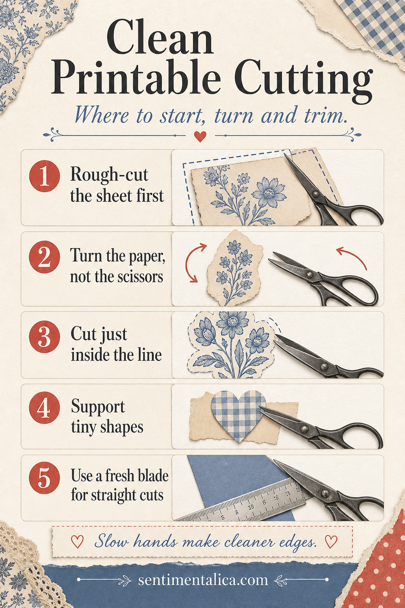

Clean cutting is less about perfect hands than about controlling the size of the paper. When a full sheet pulls against the scissors, curves become jagged and tiny motifs buckle. A quick rough cut gives your hands room to move.

Rough-cut before following the outline
Separate each motif with a generous border first. Work on one small piece at a time, holding it lightly near the cutting area. Keep your scissors pointed away from your supporting fingers and make short, continuous cuts rather than a series of anxious snips.
Turn the paper, not the scissors
For curves, keep the blades moving in roughly the same direction while rotating the paper with your other hand. This creates a smoother arc. Cut just inside a printed outline when you want a borderless piece; otherwise leave a consistent halo rather than chasing every irregular pixel.
Support small shapes
Do not cut a tiny leaf or tab completely free at the beginning. Keep it attached to a larger scrap while you refine the difficult edge, then make the final release cut. For long straight lines, use a metal ruler and a fresh craft blade on a proper mat, cutting away from your body.
Pause when your hand tightens. Slow, relaxed movement makes cleaner edges than added force. Keep the finished pieces in a shallow tray so delicate points are not crushed beneath offcuts.
Visuals in this article were created with AI assistance and art-directed for Sentimentalica.
Find more printable craft guidance in the Sentimentalica journal archive.